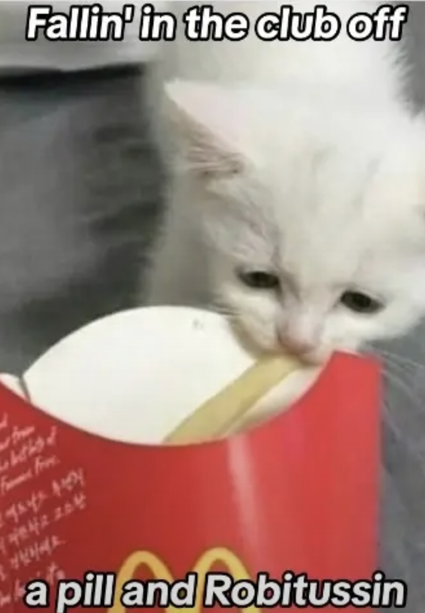
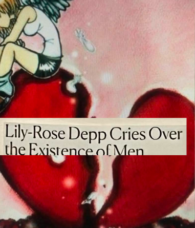
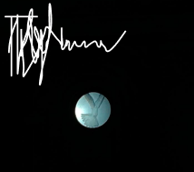
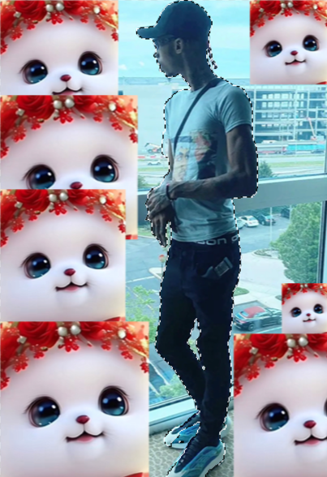

Abe Linkoln Aka Rick Silva
29, 2023, 11:16pm
Oct 25, 2023, 11:19pm
Apr, 11, 2023, 9:02pm
Nov, 7, 2023, 4:49pm
Abe Linkoln created many works of art using code and the internet. This website is aiming to emulate my three favorite creations from him using my own images I've taken or found on the internet. Explore my website and learn about the aesthetics Abe Linkoln AKA Rick Silva created. Current Screenfull, the original Screenfull (created with noblog in collaboration with Jimpunk in 2003), 544x378(WebTV)(created with Powerblog also in collaboration with Jimpunk in 2004), and Enpleinair (2013).